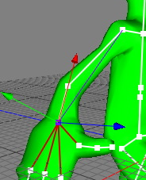

|
The IK handle tag will be used to define an IK ( Inverse Kinematics) chain. IK is often used to pose characters. For example to move arms and legs. With IK you no longer have to adjust the rotation of every single joint but just have to move the end of the IK chain. The IK handle.
If you want to position the hand in the example below you have two choices.
1. FK : With FK (Forward Kinematics) we first have to rotate the shoulder joint and then we have to rotate the elbow joint to position the hand. That is not very efficient of course.
2. IK : For inverse kinematics we have to attach a IK Handle Tag to the wrist joint once. Then we set the length property to 2 since we want that the IK chain goes until the shoulder joint. Once set up you just have to move the wrist joint to position the hand and Cheetah3D automatically sets the rotations of the shoulder and elbow joints.
Example:
Lets see at an example how to set up an IK chain for the right arm of an character.
- Lets assume you already have a skeleton.
- Bend the elbow slightly in the direction into which the arm should bend later. It is important that you make that because the IK solver needs a small hint to know into which direction the arm should bend.
- Select the wrist joint and attach an IK handle tag to it via the toolbar. This also automatically sets the preferred angles of the joints. So it is important that you've bent the elbow before you've attached the IK tag.
- You are done. For a normal arm the default values of the IK Handle tag are already sufficient.
- Moving the wrist joint now bends the hole arm.

IK chain with length=2.
To constraint the IK chain you can use either the IK Constraints Tag. For example to limit set rotation values of a certain joint or to adjust the stiffness of a joint.
If you double click on a joint which have an IK tag with "target" object set, Cheetah3D doesn't select the joint but it's target object.
Properties:
- solver:
- 3D solver: It tries to reach the target position by rotating with all rotation angles.
- 2D solver: It tries to rotate the IK chain just in a plan spanned up by the root joint, the target joint and the second joint in the IK chain. The chain therefore just moves within a plane. This solver is especially useful for animating legs and arms of characters.
- length: The length of the IK chain.
- target: An object which the IK handle tries to reach.
- pole: The pole vector (vector from the root of the IK chain to the pole object) and the target vector (vector form the root to the target object) span up a plane in 3D space. The 2D IK solver now tries to move the IK chain within that plane.
- color: The color of the IK handle and the line connecting the IK handle with the root of the IK chain.
- use preferred angle: The preferred angles of an IK chain defines the start pose where the IK solver starts to reach the target position. This property is enabled by default and the preferred angles are set automatically when you attach am IK handle tag to an object.
- set preferred angle: Sets the preferred angles of the joints in an IK chain.
- add target: Adds a folder object to the scene and automatically sets the newly created folder as the target object of the IK chain.
- add pole: Adds a folder object to the scene and automatically sets the newly created folder as the pole object of the IK chain.
|